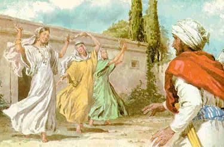

La Biblia contiene gran cantidad de referencias e historias sobre los padres. Unos textos enseñan el respeto a los padres, como “Honra a tu padre y a tu madre” en Éxodo 20,12, pero también contiene unas historias de padres creyentes que son poco difundidas por los curas y pastores que dejan muy mal parada la Biblia como libro de guía moral. Este escrito explorará estas historias:
Noé

Empecemos por este “abuelo de la humanidad”, a quien muchos creyentes fundamentalistas toman como uno de los pocos sobrevivientes del mítico diluvio. Pues bien, uno se imaginaría que para haber sido escogido por Dios para salvarse, debería ser un modelo de moralidad. Sin embargo, la Biblia muestra que este patriarca se emborrachaba y tenía una tolerancia 0 con sus hijos. He aquí la historia
Los hijos de Noé que salieron de la barca fueron Sem, Cam, padre de Canaán, y Jafet. 19 Éstos fueron los tres hijos de Noé, y con sus descendientes se volvió a poblar la tierra.
Noé comenzó a cultivar la tierra, y plantó una viña. Un día Noé bebió vino y se emborrachó, y se quedó tirado y desnudo en medio de su tienda de campaña. Cuando Cam, o sea el padre de Canaán, vio a su padre desnudo, salió a contárselo a sus dos hermanos. Entonces Sem y Jafet tomaron una capa, se la pusieron sobre sus propios hombros, y con ella cubrieron a su padre. Para no verlo desnudo, se fueron caminando hacia atrás y mirando a otro lado.
Cuando Noé despertó de su borrachera y supo lo que su hijo menor había hecho con él, dijo:
«¡Maldito sea Canaán!¡Será el esclavo más bajode sus dos hermanos!»Luego añadió:«Bendito sea el Señor, Dios de Sem,y que Canaán sea su esclavo.Dios permita que Jafet pueda extenderse;que viva en los campamentos de Sem,y que Canaán sea su esclavo.»
Un padre que maldice a su hijo por verlo desnudo no es un buen ejemplo de cómo ser un buen padre. Además si estaba desnudo era por su sinvergüencería!
Lot

Ahora es el turno para el sobrino del patriarca Abraham. Este personaje bíblico fue salvado también de la destrucción de la ciudad de Sodoma porque fue amonestado directamente por un ángel enviado por Dios. Lastimosamente parece que Dios ya no utiliza la táctica de enviar ángeles para salvar a la gente, y por eso hoy en día mueren muchos en desastres naturales. Pero no nos desviemos de la historia de Lot. Sucede que al llegar los ángeles a la ciudad fueron acogidos por Lot en su casa, pero luego llegó una turba de hombres que querían que Lot los sacase de su casa para que ellos “los conocieran”. La turba los quería violar.
Lot, un típico machista, no puede permitir que algo malo le pase a sus huéspedes varones y responde a la turba de una manera que a mi juicio lo haría merecedor de la lluvia de fuego y azufre que vendría sobre Sodoma:
Yo tengo dos hijas que todavía no han estado con ningún hombre; voy a sacarlas para que ustedes hagan con ellas lo que quieran, pero no les hagan nada a estos hombres, porque son mis invitados. (Génesis 19:8)
¡Qué ejemplo tan bonito el de la Biblia! Más sorprendente aún es que el dios Yahvé no se pronuncia en contra de tal barbarie y machismo.
Jefté
La Biblia tiene otra sorpresa: Sacrificios humanos aprobados por Dios. Para muchos evangélicos de Biblia bajo el brazo debería aterrarles que el libro que tienen por sagrado muestra esta práctica por un hombre que servía al mismo Dios que ellos adoran. La historia la encontramos en el libro de los Jueces
Y Jefté le hizo esta promesa al Señor: «Si me das la victoria sobre los amonitas, yo te ofreceré en holocausto a quien primero salga de mi casa a recibirme cuando yo regrese de la batalla.»
Jefté va a la guerra y la gana (Jueces 11:34-39)
Cuando Jefté volvió a su casa en Mispá, la única hija que tenía salió a recibirlo bailando y tocando panderetas. Aparte de ella, no tenía otros hijos, 35 así que, al verla, se rasgó la ropa en señal de desesperación y le dijo:
—¡Ay, hija mía, qué gran dolor me causas! ¡Y eres tú misma la causa de mi desgracia, pues le he hecho una promesa al Señor, y ahora tengo que cumplírsela!
Y ella le respondió:
—Padre mío, haz conmigo lo que le prometiste al Señor, ya que él ha cumplido su parte al darte la victoria sobre tus enemigos los amonitas. Te ruego, sin embargo, que me concedas dos meses para andar por los montes, con mis amigas, llorando por tener que morir sin haberme casado.
Jefté le concedió los dos meses, y en ese tiempo ella anduvo por los montes, con sus amigas, llorando porque iba a morir sin haberse casado. Después de ese tiempo volvió a donde estaba su padre, y él cumplió la promesa que le había hecho al Señor. La hija de Jefté murió sin haber tenido relaciones sexuales con ningún hombre.
El anciano de Gaaba:
También en el libro de los Jueces se muestra una historia paternal similar a la de Lot. En esta ocasión se trata de un anciano del poblado de Gaaba que da posada a un levita, un sacerdote judío. Y de forma parecida a la de la historia de Lot (¿tendrán un origen común?) la casa es asaltada por una turba que desea violar al levita. La reacción de este padre fue:
19:23 Y salió a ellos el dueño de la casa y les dijo: No, hermanos míos, os ruego que no cometáis este mal; ya que este hombre ha entrado en mi casa, no hagáis esta maldad. 19:24 He aquí mi hija virgen, y la concubina de él; yo os las sacaré ahora; humilladlas y haced con ellas como os parezca, y no hagáis a este hombre cosa tan infame. 19:25 Mas aquellos hombres no le quisieron oír; por lo que tomando aquel hombre a su concubina, la sacó; y entraron a ella, y abusaron de ella toda la noche hasta la mañana, y la dejaron cuando apuntaba el alba.
Estas historias bíblicas nos dicen mucho del papel de la mujer en la Biblia.
Es muy paradójico saber que muchos cristianos afirman que la Biblia es una guía en cuanto a creencias y moralidad, cuando ignoran estas historias tan desagradables, o si las conocen las excusan de forma absurda. Los evangélicos suelen defender la primacia de la Biblia con un texto de 2 Timoteo que afirma que
3:16 Toda la Escritura es inspirada por Dios, y útil para enseñar, para redargüir, para corregir, para instruir en justicia, 3:17 a fin de que el hombre de Dios sea perfecto, enteramente preparado para toda buena obra.
Después de ver las historias de estos padres bíblicos déjeme decir que lo dudo profundamente.
Volver a la sección Examinando las religiones
Comentarios
Comments powered by Disqus